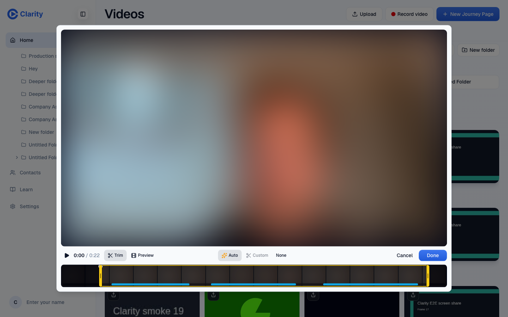
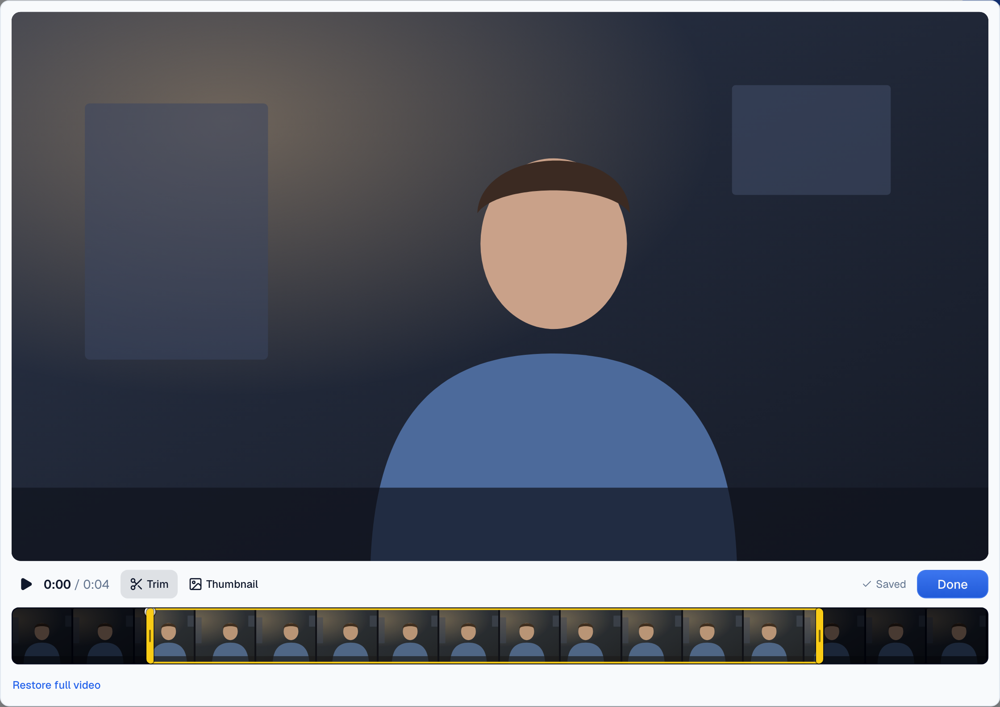
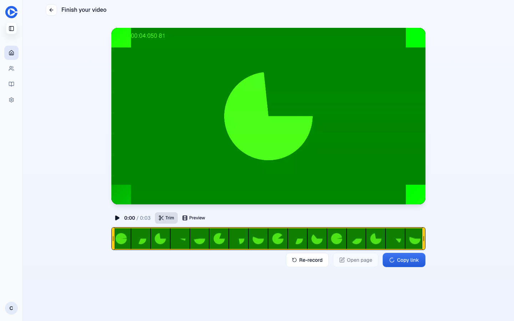
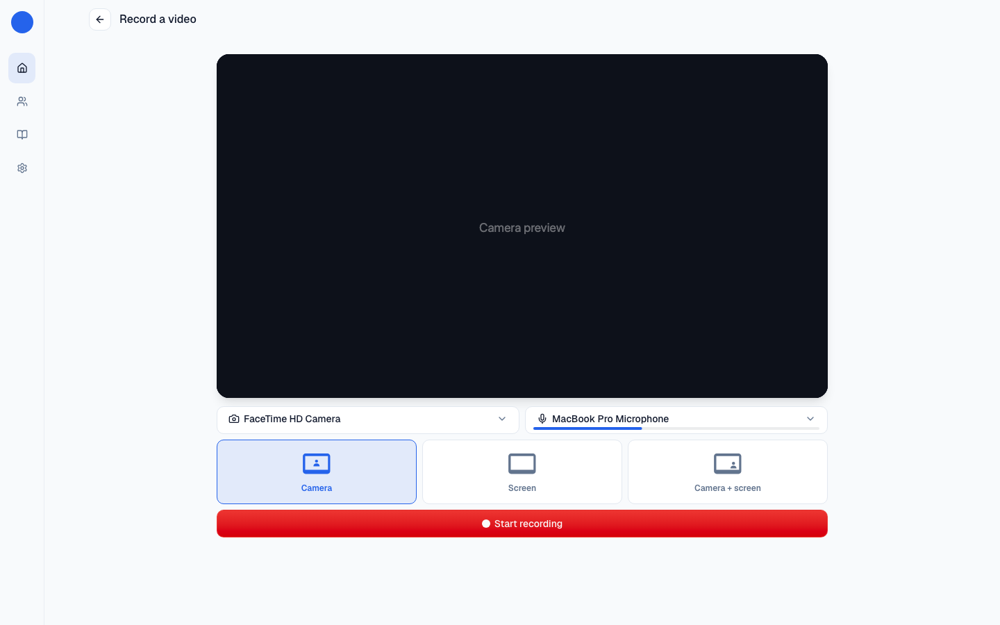
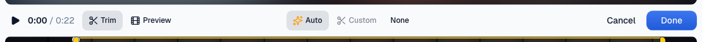

Recorder: automatic trim, autosaving edit modal, layouts decided by data
Recorder finish screen, video edit modal, layout picker.
Apply the auto trim when the recording finishes, draw the handles where it landed, and offer one "Restore full video" link. Delete the Auto / Custom / None row and the finish-screen toggles. The edit modal saves as you go, like the recorder, with one "Done" and no Cancel ("Restore full video" is the undo). Keep four layouts for now: no row in production says which layout a recording used, so the merge would be a guess. U01 ships click tracking tonight; in a month the layout tiles will have numbers, and the merge becomes a one-line decision.
The problem
The finish screen shows seven toggles above three buttons. Trimming is a three-way choice that 6 users ever made. The modal and the recorder save differently: the recorder autosaves, the modal saves on Done and drops the draft on Cancel. The layout picker offers four tiles, two of which are camera-plus-screen variants.
What it would look like
Before, the trim row and the finish toggles. After, handles already placed and one link.










What the data says
Recording and trim usage, customers
| Measure | Count |
|---|---|
| Recordings in the videos table (since 2026-09-24) | 52 by 8 owners, 18 ready |
| Videos with a clip (clip_start/end set) | 10 videos, 4 owners |
| Pages storing a trim on hero or story media | 0 |
| Transcripts (video_speech) | 3 rows, 1 customer |
| video_trimmed server events, all accounts | 35 by 6 users |
| clip_published, all accounts | 27 by 4 users |
Trim lives on the video row, not the page. The recorder is new (first recording row 2026-09-24), so these are early numbers.
Layout
| Measure | Result |
|---|---|
| Column recording the layout (camera / screen / split / inset) | none |
| workspace_nodes.metadata.record_type | always "video" |
| captureMode in the client | chooses a bitrate only (recorder-encoding.ts:78-86), never sent |
There is no production evidence for which camera-plus-screen layout to keep. U01 adds click tracking to every control tonight; the four tiles will have counts within weeks.
Code facts: auto trim is computed in the recorder (recorder-take.ts, autoTrim); the modal offers Auto / Custom / None only when the take has one (VideoEditConsole.tsx:29). The modal saves trim and thumbnail together on Done and drops the draft on Cancel (VideoEditModal.tsx:73-74). Open PR #1366 touches the video controls and #1423 the recorder transcript.
Options
Two changes with evidence now, one deferred until the evidence exists.
Inset is the common convention (Loom), but choosing it today is taste. If William already has a preference, this is fine.
Leaves the seven-toggle finish screen.
Questions for William
Recommended: Yes. 6 users ever chose, and the handles stay for anyone who wants to adjust.
Recommended: Yes. Same model as the recorder; Restore is the undo.
Recommended: Wait. If William already knows he wants inset, merge now and skip the wait.
PRs once decided
Finish screen and VideoEditConsole.tsx: apply the take's autoTrim, delete the toggle row, add "Restore full video" (shown only when a trim is set). Evidence: finish flow video with fake media, modal before/after.
VideoEditModal.tsx: save on change through the existing save path, status line from VideoEditorSaveStatus, one Done. Coordinate with #1366.
RecorderLayoutPicker.tsx: drop the loser once the tiles have click counts.